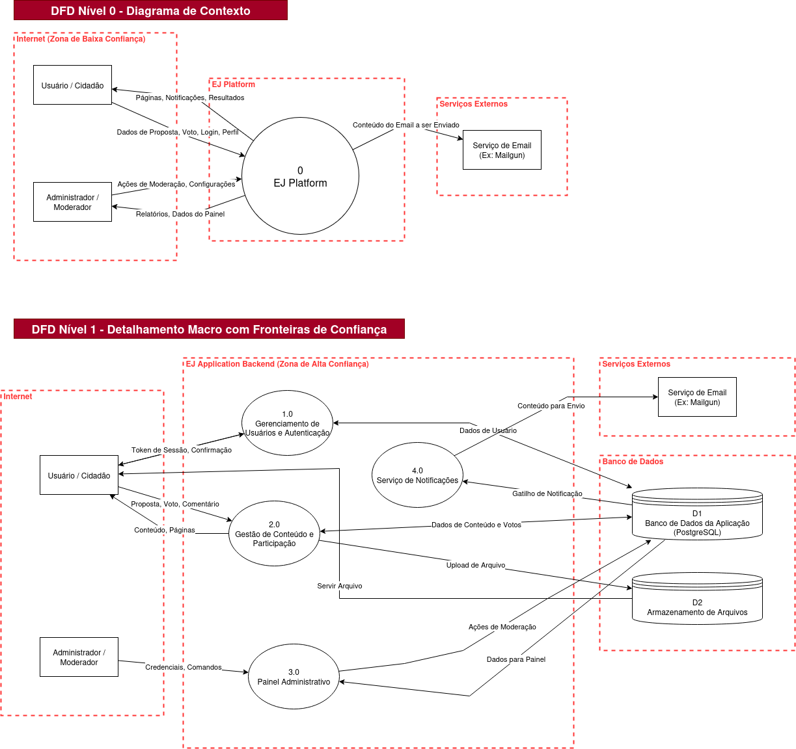

📝 Relatório de Contribuição – Sprint 2
Disciplina: Gestão de Configuração e Evolução de Software
Equipe: OWASP (Times Blue e Red)
Período da Sprint: 24/09/2025 - 07/10/2025
1. Objetivos da Sprint
Blue Team
- O Básico do CI/CD – A Fundação
- Entender o GitLab CI/CD
- O que é CI/CD (Integração Contínua / Entrega Contínua)?
- O que são "Runners", "Jobs", "Stages"
- O que faz o arquivo .gitlab-ci.yml
- Ler a documentação "Get started with GitLab CI/CD"
- Diagrama de Fluxo de Dados(DFD)
- Modelagem de Riscos e Ameaças
Red Team
- Explorar ataques sobre o EJ (Red Team): SQL Injection, CSRF, XSS e Clickjacking
- Estudar sobre:
- IDOR
- Sessões / Cookies inseguros
- Brute force / Rate limiting
2. Entregas Coletivas
| Entrega | Status (Concluído/Parcial/Pendente) | Link/Referência | Observações |
|---|---|---|---|
| Análise da Plataforma sobre SQL Injection, XSS, CSRF e Clickjacking | Concluído | ||
| Estudo e Implementação de Ferramentas de Segurança no CI/CD | Concluído | Gitleaks e Bandit testados |
3. Contribuições Individuais
| Integrante | Contribuições | Links (PRs, Issues, Docs) | Observações |
|---|---|---|---|
| Mateus Vieira | Documentação de Vulnerabilidade XSS V1.0 | Análise sobre XSS (Vulnerabilidade Encontrada) | |
| Breno Lucena | Estudo sobre CI/CD em pipelines no GitLab | Estudo e Prática — CI/CD com GitLab | |
| Daniel Rocha Oliveira | Estudo sobre CI/CD em pipelines no GitLab, criação de um arquivo exemplo .yml | Estudo e Prática — CI/CD com GitLab | |
| Sebastián Zuzunaga | Imagens sobre o código e os resultados da implementação do Gitleaks. | Exemplo de pipeline CI/CD | |
| Júlio Costa | Documentação e Prática do Ataque de SQL Injection | Ataque SQL Injection | |
| Henrique Hida | Documentação e Prática do Ataque de CSRF | Ataque CSRF | |
| Marcus Vinicius | Documentação e Prática de Ataques de IDOR e Análise de Cookies | Análise IDOR e Cookies | |
| Miguel Arthur | Documentação do DFD (diagrama de fluxo de dados) e o documento dos riscos e ameaças | Análise de Ameaças e Modelagem de Riscos | |
| Henrique Quenino | Documentação e Prática do Ataque de Brute Force / Rate Limiting | Ataque Brute Force/Rate Limiting |
4. Maiores Avanços
Blue Team
Estudo e Implementação de CI/CD
Conceitos Fundamentais Dominados:
- Pipeline: Fluxo automatizado de execução das etapas do projeto
- Stage: Etapas principais do pipeline (test, build, deploy)
- Job: Tarefas específicas dentro de cada stage
- Runner: Agente executor dos jobs
- Artifact: Arquivos gerados e salvos para uso posterior
- Cache: Mecanismo de reuso de dependências
Ferramentas de Segurança Estudadas:
- Gitleaks: Detecção de segredos e credenciais expostas no código
- Bandit: Analisador estático de segurança para código Python
- GitLab CI/CD: Pipeline de integração e entrega contínua
Implementação Prática:
- Criação de arquivo
.gitlab-ci.ymlexemplo com estrutura completa - Configuração de forks do projeto para testes
- Execução de pipelines locais do projeto EJ
Documentação Produzida:
- Guia de CI/CD com GitLab
- Arquivo exemplo de pipeline
- Diagramas de fluxo de dados (nível 0 e 1)
- Mapeamento de ameaças utilizando framework STRIDE
Exemplo de pipeline:
- Código usado na pipeline.

- Fluxo da pipeline.
- Job de Gitleaks.
Análise de Ameaças e Modelagem de Riscos
O principal avanço da equipe nesta sprint foi a conclusão da primeira fase da modelagem de ameaças da EJ-Platform. Este trabalho estabelece a base fundamental para todas as atividades futuras de defesa, permitindo que a equipe tome decisões informadas sobre onde concentrar os esforços de mitigação.
O processo foi dividido em duas atividades principais:
1. Construção do Diagrama de Fluxo de Dados (DFD):
Foi elaborado um DFD detalhado, em dois níveis, para mapear a arquitetura macro da aplicação. Este diagrama, criado no formato profissional utilizado em modelagem de segurança, define claramente os atores, os processos principais, os repositórios de dados e, mais importante, as Fronteiras de Confiança (Trust Boundaries) entre os diferentes componentes do sistema (Internet, Backend, Banco de Dados e Serviços Externos).
Este artefato visual é crucial, pois nos permite identificar exatamente onde os dados cruzam fronteiras com diferentes níveis de privilégio, que são os pontos mais críticos para a análise de segurança.
Artefato Visual (Imagem):

2. Mapeamento de Ameaças com o Framework STRIDE:
Utilizando o DFD como guia, a equipe realizou uma análise sistemática de ameaças para cada fluxo de dados, processo e repositório, aplicando as seis categorias do framework STRIDE:
- Spoofing (Falsificação de Identidade)
- Tampering (Adulteração de Dados)
- Repudiation (Repúdio de Ações)
- Information Disclosure (Vazamento de Informações)
- Denial of Service (Negação de Serviço)
- Elevation of Privilege (Elevação de Privilégios)
Para cada componente, foram identificados cenários de ameaça específicos, sugestões de mitigação e uma classificação de risco inicial (Baixo, Médio, Alto, Crítico). Este exercício revelou pontos críticos na aplicação, como a necessidade de proteção robusta nos fluxos de autenticação, a prevenção de ataques de injeção (SQLi, XSS) na gestão de conteúdo e a importância de controles de autorização rigorosos para evitar a elevação de privilégio (IDOR).
- Artefato Gerado: Doc: de Análise de Riscos e Ameaças
Este trabalho não apenas cumpre um dos objetivos centrais do semestre, mas também fornece ao Red Team um "mapa" claro das áreas mais prováveis de conterem vulnerabilidades exploráveis, promovendo uma sinergia eficaz entre as duas equipes.
Red Team
Ataque sobre SQL Injection
Foi utilizado a ferramenta BurpSuite Community Edition para a obtenção das URLs de requisições GET e POST, na aba Proxy/Intercept, clicando na opção de abrir Browser, que irá abrir um browser Chromium normal, a partir dele entrei na conta fake de testes como usuário (user@user.com) presente no banco de dados postgres através do comando inv docker-exec 'inv db-fake' e realizei ações comuns do usuário como criar um dashboard, personas, alterar informações do usuário logado, etc.
O BurpSuite manteve um histórico de todas as requisições feitas nesta sessão na aba Proxy/HTTP History, foi selecionado todas as requisições desse histórico e salvo em um arquivo xml que será passado como argumento para o SQLMap
Para o teste de fato foi utilizado a ferramenta SQLMap, muito utilizada para ataques de SQL Injection com muitas opções avançadas e suporte a vários banco de dados (Oracle, Postgres, MySQL, etc), foi executado o seguinte comando:
sqlmap -l burg_log.xml --batch --level 5 --risk 3 --dbms postgres
-l: Comando especifico para obter alvos através de um arquivo log do BurpSuite ou WebScarabburg_log.xml: Arquivo de log obtido através do Proxy do BurpSuite--batch: Não perguntar por confirmações e selecionar as opções padrões--level 5: Nível máximo de quantidade de testes a serem realizados--risk 3: Nível de risco máximo, com alta chance de ser detectado (não é importante neste caso)--dbms postgres: Informa o SQLMap para usar apenas scripts especificos para postgres, usado na EJ Application, se não informado o SQLMap irá tentar scripts de vários banco de dados diferentes como Oracle, MySQL e outros.
Não foram encontrados pontos de falha SQL Injection utilizando SQLMap, apesar de ele ter encontrado alguns falsos positivos:
- Em localhost/boards/teste/conversations/add/ usando SQL Injection no User-Agent com técnicas boolean blind based
- Em localhost/boards/teste/conversations usando SQL Injection no Cookie de sessionid com técnicas boolean blind based
Esses falsos positivos foram identificados com a técnica de boolean blind based que injeta scripts SQL em objetos dentro da requisição e espera uma resposta diferente da padrão, se houve uma resposta diferente então o ataque é considerado bem sucedido, mas isso pode ocorrer quando uma página possuí elementos dinâmicos, provavelmente o SQLMap verificou que a página mudou, mas ao tentar fazer um exploit (acesso ao banco de dados ou obter informações) através desta técnica ele não teve resultados.
Target URL,Place,Parameter,Technique(s),Note(s)
http://10.0.0.5:8000/boards/teste/conversations/,Cookie,sessionid,B,false positive or unexploitable
http://10.0.0.5:8000/boards/teste/conversations/add/,User-Agent,User-Agent,B,false positive or unexploitable
Vídeo de demonstração:
Ataque sobre XSS (Vulnerabilidade Encontrada)
- Tipo de vulnerabilidade: XSS Persistente (Stored XSS).
- Localização: Campos Rich Text. O conteúdo salvo é posteriormente renderizado no navegador sem escaping adequado.
- Causa raiz: Falta de sanitização no backend + renderização com flags que desabilitam escaping, permitindo que conteúdo armazenado seja interpretado como código no cliente.
- Evidência: Conteúdo malicioso foi persistido no banco e provoca execução de script quando a página afetada é carregada por um usuário. (passos e payloads foram removidos deste documento).
- Impacto potencial: Roubo de cookies de sessão, execução de ações em nome do usuário, manipulação de feedbacks/entradas, redirecionamentos e degradação da confiança na plataforma.
- Recomendações:
- Implementar sanitização server-side robusta para entradas Rich Text (usar bibliotecas maduras e listas de permissão de tags/atributos).
- Evitar uso irrestrito de flags que desabilitem escaping; garantir que qualquer conteúdo marcado como seguro seja validado e sanitizado.
Link: Relatório Completo de Reprodução e Análise da Vulnerabilidade
Obs: O relatório completo é um arquivo privado no OneDrive e, até o momento, só está liberado para a professora da disciplina.
Ataque sobre CSRF
O que é CSRF (Cross-Site Request Forgery)
CSRF é uma técnica de ataque em que um site malicioso faz com que o navegador de uma vítima autenticada envie requisições indesejadas a um site confiável onde a vítima já possui sessão ativa. O atacante explora o fato de que cookies e outras credenciais gerenciadas automaticamente pelo navegador são incluídas em requisições originadas do contexto do usuário.
Cenário de teste descrito
- Testar via página HTML separada — Foi criado um arquivo HTML que tenta enviar um POST para
http://localhost:8000/api/v1/votes/a partir do mesmo navegador onde está logado como admin. Ao submeter a requisição pelo HTML, o servidor respondeu com401 Unauthorizede o JSON{"detail": "Credenciais de autenticação não foram fornecidas."}.
Saída observada
Vote List
POST /api/v1/votes/
HTTP 401 Unauthorized
Allow: GET, POST, HEAD, OPTIONS
Content-Type: application/json
Vary: Accept
WWW-Authenticate: Bearer realm="api"
{
"detail": "Credenciais de autenticação não foram fornecidas."
}
- O comportamento indica que o endpoint exige um header
Authorization: Bearer <token>para autenticação, ou outro esquema que não é enviado automaticamente pelo navegador quando a requisição é iniciada de outro site. - Quando a requisição foi disparada a partir do HTML externo, o navegador não enviou qualquer credencial (nem cookie de sessão nem header Authorization), logo o servidor respondeu
401. - Isso implica que o mecanismo de autenticação atual não é baseado em cookies de sessão enviados automaticamente. Como resultado, o vetor clássico de CSRF falhou.
Ataque sobre Clickjacking
- Tipo de vulnerabilidade: Clickjacking (UI Redress Attack).
- Localização: Páginas públicas e autenticadas da aplicação EJ (testes realizados no endpoint
/logine em outras rotas acessíveis sem proteção de cabeçalhos). - Causa raiz: Ausência dos cabeçalhos de segurança
X-Frame-OptionseContent-Security-Policy: frame-ancestors, o que permite que a aplicação seja embutida dentro de um<iframe>externo. -
Descrição do ataque:
O atacante pode criar uma página maliciosa contendo umiframeinvisível ou semitransparente que carrega a aplicação legítima. Sobre esteiframe, ele posiciona elementos visuais falsos (ex.: "Clique aqui para ganhar um prêmio"). Quando o usuário clica nesses elementos, o clique é redirecionado para o botão real da aplicação — por exemplo, um botão de login, confirmação ou envio — sem o conhecimento do usuário. -
Prova de Conceito (PoC):
Foi criado o arquivopoc.htmlcontendo um iframe apontando para a página de login da EJ Application: Relatório Completo de ataque clickjacking
Ataque sobre IDOR (Insecure Direct Object Reference)
O que é IDOR?
IDOR (Insecure Direct Object Reference) é uma falha de controle de acesso onde um site permite que um usuário acesse ou modifique dados que não pertencem a ele, simplesmente ao manipular o valor de um identificador (ID) em uma requisição, como um número na URL. Se a aplicação não verificar se o usuário logado tem permissão para acessar o objeto com aquele ID, a vulnerabilidade existe.
Cenário de teste descrito
- Preparação — Foi feito o login como
admin@admin.compara acessar o painel de administração (/admin/) e descobrir o ID numérico de usuários. - Teste — Em um navegador separado (janela anônima), foi feito o login como um usuário comum (
user@user.com). Em seguida, foi feita uma tentativa de acesso direto ao perfil do admin, forçando a URL parahttp://localhost:8000/users/34/. - Resultado — O servidor respondeu com um erro
404 Page not found.
Saída observada
A aplicação retornou a página de erro padrão do Django, indicando que a rota solicitada não existe. A lista de URLs válidas exibida na página de erro confirmou que não há um padrão de URL no formato /users/<ID>/.
- E esse comportamento indica que a aplicação não expõe perfis de usuário através de uma URL direta com o ID numérico.
- Como a rota não existe, o resultado prático é que este vetor de ataque específico de IDOR não é explorável.
Ataque sobre Sessões / Cookies Inseguros
O que são Sessões / Cookies Inseguros?
Refere-se a falhas no gerenciamento do cookie que identifica a sessão de um usuário logado. Se o cookie não for configurado com atributos de segurança (flags), ele pode ser interceptado em redes inseguras ou roubado por scripts maliciosos.
Cenário de teste descrito
- Preparação — Foi feito o login na aplicação com um usuário.
- Teste — Utilizando as Ferramentas de Desenvolvedor do navegador (
F12), a abaApplication(ouStorage) foi usada para inspecionar os cookies do site. - Resultado — O cookie
sessionidfoi localizado e seus atributos de segurança foram analisados.
Saída observada
A inspeção do cookie sessionid revelou os seguintes atributos:
* HttpOnly: True
* Secure: False
* SameSite: Lax
- O comportamento indica que o cookie de sessão está corretamente protegido contra leitura por scripts JavaScript (graças à flag
HttpOnly). - A flag
SameSite=Laxtambém é uma boa configuração padrão, oferecendo proteção contra ataques de CSRF. - No entanto, a flag
Secureestá ausente. Isso implica que, em um ambiente de produção real com HTTPS, o cookie poderia ser interceptado, representando uma vulnerabilidade.
Ataque sobre Brute Force e Rate Limiting
- Tipo de vulnerabilidade: Brute Force Attack / Ausência de Rate Limiting.
- Localização: Endpoints de autenticação, formulários de login, APIs de reset de senha, endpoints de validação OTP/2FA e qualquer ponto de entrada que aceite credenciais de usuário.
- Causa raiz: Falta de implementação adequada de mecanismos de rate limiting e controles de segurança que limitam o número de tentativas de autenticação por usuário, IP ou sessão dentro de um período específico de tempo.
Descrição do ataque:
Ataques de brute force são métodos sistemáticos onde atacantes utilizam ferramentas automatizadas para tentar múltiplas combinações de credenciais até encontrar as corretas. Este tipo de ataque pode se manifestar de várias formas:
- Traditional Brute Force: Tentativas automáticas de múltiplas senhas contra um usuário conhecido
- Dictionary Attacks: Uso de listas de senhas comuns e variações baseadas em pesquisa do alvo
- Credential Stuffing: Utilização de combinações usuário/senha obtidas de vazamentos de outros sites
- Password Spraying: Teste de uma senha fraca contra múltiplas contas diferentes
Ferramentas comumente utilizadas:
- Hydra (THC-Hydra): Cracking de autenticação de rede via brute force, suporta mais de 30 protocolos
- John the Ripper: Ferramenta clássica que combina múltiplas funcionalidades de quebra de senha
- Burp Suite: Suite de testes de segurança web com módulo Intruder para ataques automatizados
- Hashcat: Cracking de senhas acelerado por GPU, capaz de testar milhões de combinações por segundo
- Patator: Ferramenta multi-propósito para brute force em FTP, SSH, SMTP, RDP e outros protocolos
Técnicas de bypass de rate limiting:
- Manipulação de headers: Alteração de
X-Forwarded-For,X-Originating-IP,User-Agent - Rotação de endpoints: Uso de variações como
/login,/Login,/LOGIN - Uso de caracteres especiais: Inserção de bytes nulos (
%00,%0d%0a,%20) em parâmetros - Distribuição via proxies: Uso de redes Tor, VPNs ou botnets para distribuir requisições
- Race conditions: Exploração de condições de corrida para enviar múltiplas requisições simultaneamente
Exemplo de implementação:
# Exemplo de rate limiting simples em Flask
from flask_limiter import Limiter
from flask_limiter.util import get_remote_address
limiter = Limiter(
app,
key_func=get_remote_address,
default_limits=["200 per day", "50 per hour"]
)
@app.route('/login', methods=['POST'])
@limiter.limit("5 per minute")
def login():
# Lógica de autenticação
pass
5. Maiores Dificuldades
- Houve dificuldade de acesso à aplicação Docker via Kali Linux, resolvida ao incluir o IP local da máquina host em
DJANGO_ALLOWED_HOSTS. - Houve dificuldade em gerenciar duas sessões simultâneas para testes de IDOR (foi necessário usar navegadores/perfis distintos).
- Houve dificuldade em contornar a sanitização de entradas da API para explorar vulnerabilidades XSS, pois os endpoints estavam bem protegidos, tornando complexo identificar pontos suscetíveis a ataques.
- Configuração inicial dos forks do projeto e entendimento da estrutura complexa do pipeline GitLab.
- Integração de ferramentas de segurança (Gitleaks, Bandit) no fluxo CI/CD existente.
6. Lições Aprendidas
- Utilização de sqlmap e BurpSuite para testes de injeção e proxy de requisições.
- Sanitização server-side é obrigatória, mesmo com validações client-side.
- Rich Text com renderização sem escape aumenta risco de XSS persistente.
- Ferramentas automatizadas (ex.: sqlmap) ajudam na triagem; análise manual ainda é necessária.
- Domínio completo dos conceitos de CI/CD e estruturação de pipelines GitLab.
- Importância da integração de ferramentas de segurança no ciclo de desenvolvimento.
- Configuração adequada de atributos de segurança em cookies é crucial para proteção.
7. Planejamento para a Próxima Sprint
Blue Team
- Implementar ferramentas de segurança no pipeline CI/CD do projeto
- Configurar Gitleaks e Bandit no fluxo de integração contínua
- Desenvolver políticas de segurança para código e dependências
- Criar monitoramento contínuo de vulnerabilidades
Red Team
- Explorar Ataques:
- IDOR
- Sessão (Cookies)
- Rate-limit / Fuzzing
- Simular phishing no contexto da plataforma